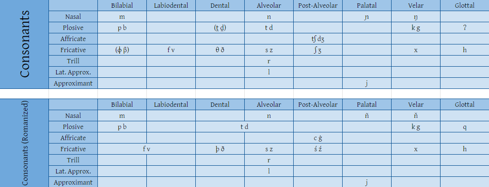

Phonology and Orthography
Consonants
Atinú has 26 consonants. They are:
Vowels
And there're 9 vowels, each having a long version (so 18 in total). They are:

(big thanks to @disco_n0stalgia on discord for making these graphs!)
Alphabet Order
Atinú's alphabet order/song(?) is in two parts:
Vowels:
- i í
- e é
- è ê
- a á
- y ý
- u ú
- o ó
- ò ô
- à â
Consonants:
- my ny ño ňa
- py by ko ga
- ty dy þo ða
- fy vy so za
- cy ġy śo źa
- xy hy qo ja ry ly
Atinmośu (Atinú's script)
this is what the Atinmośu script looks like:
(big thanks to @disco_n0stalgia again for making these!)
Phonotactics
Atinú's syllable structure is (C)(C)V(C)(C), where:
- C = consonant
- V = vowel
Atinú's phonotactics are pretty simple, but there are some rules to follow:
-
some clusters are illegal, heres an image that shows the legal clusters
- GREEN: legal clusters
- YELLOW: coda clusters
- RED: illegal clusters
- double clusters are illegal, they must be broken up by a <q> (example: nn, aa ❌, nqn, aqa ⭕)
- <ñ> always needs to be followed by a vowel